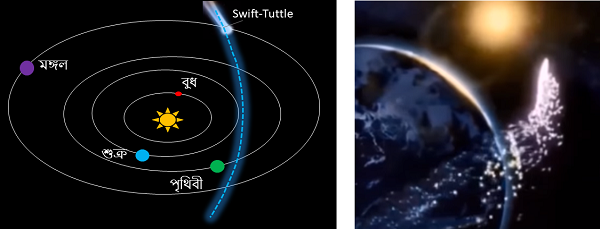

Sun Aug 13 18:23:44 2017 এই সপ্তাহান্তে চলছে পারসেইড উল্কাবৃষ্টি পর্যবেক্ষণ করার হিড়িক | সবাই খবরের চ্যানেল, কাগজ এ চোখ রাখছে কোথায় কোন সময়ে সবচেয়ে ভালো উল্কাবৃষ্টি দেখা যাবে - কপাল খারাপ থাকলে মেঘলা আকাশ পুরো উদ্দ্যোগটাই মাটি করে দিতে পারে কারো কারোর | অনেকে তল্পি তল্পা গুছিয়ে নিয়ে শহর থেকে একটু দূরে নির্জন জায়গায় যেখানে চারিপাশ ঘুটঘুটে অন্ধকার, চলে যাচ্ছে উল্কাবৃষ্টি দেখার জন্য | আমার মনে কৌতূহল এই পারসেইড উল্কাবৃষ্টি সম্পর্কে | ছোটবেলা রাতের ঘন কালো আকাশের দিকে তাকিয়ে তারাখসা দেখতাম - হয়তো সেগুলোও কোনো না কোনো উল্কাবৃষ্টি ছিল, কে জানে, অত ছোটবেলা আর তারপর আজকের মতো মোবাইল ইন্টারনেট ছিল না যে বড়রা বলে দেবে আজ আমরা অমুক উল্কাবৃষ্টি দেখলাম|
যাই হোক, পারসেইড উল্কাবৃষ্টি কিন্তু একা নয়, বছরের বিভিন্ন সময়ে এরকম ৮, ১০ টি ছোট বড় উল্কাবৃষ্টি হয় | সময়মতো রাতের আকাশে চোখ রাখলে তাদের দেখা যাবে এটা নিশ্চিত | উল্কাবৃষ্টির কথা যখন বলছি তখন তা কেন হয়, কিভাবে হয়, আরো বিস্তারিত কিছু না বললে মনে প্রশ্ন থেকে যায় |
শুরু করা যাক এই পারসেইড উল্কাবৃষ্টি দিয়ে - এবছর জুলাই ১৭ থেকে অগাস্ট ২৪, প্রায় দেড় মাস ধরে পৃথিবী সুইফ্ট-টুটল (comet Swift-Tuttle) নাম একটি ধূমকেতুর যাত্রাপথের মধ্যদিয়ে যাবে | ধূমকেতুর যাত্রাপথে ছড়িয়ে আছে ধূমকেতুর থেকে চড়িয়েপড়া ধ্বংসাবশেষ (comet debris) - মূলত গ্যাস অনু কণা কঠিন টুকরো পদার্থ এইসব | এই সব ধ্বংসাবশেষ গুলো খুব ধীরে ধীরে ছড়িয়ে পরে (slow diffusion) | আকাশে জেট প্লেন বা রকেট চলে যাওয়ার কয়েক মিনিটের মধ্যে তার লেজুড় (tail) মিলিয়ে যায় কিন্তু ধূমকেতু যেহেতু মহাশূন্য (space) দিয়ে চলে তাই তার থেকে বেরোনো গ্যাস, কঠিন কণা টুকরো আস্তে আস্তে দূরে সরে , অনেকবছর লেগে যায় মিলিয়ে যেতে | তো পৃথিবী এই দেড় মাস ধূমকেতুর যাত্রাপথের মধ্য দিয়ে যাওয়ার সময় কমেট ডেব্রি গুলো পৃথিবীর বায়ুমণ্ডলে প্রবল গতিতে ঢুকে পড়ার চেষ্টা করবে এবং আগুন লেগে গোলা (fireball) আকার নেয় | যত বড় গোলা তত বেশি সময় লাগবে জ্বলে নিঃস্ব হয়ে এই জ্বলন্ত অগ্নিবলয় গুলোই উল্কাবৃষ্টি রূপে আমাদের চোখে দেখা দেয় |
এই উইকেন্ড এ পারসেইড এর উল্কাবৃষ্টির হার চূড়ান্ত পর্যায়ে পৌঁছাবে | আসলে এই মুহুতে পৃথিবীর কাছ দিয়ে ধেয়ে যাওয়া সবচেয়ে বড় বস্তু হলো সুইফ্ট-টুটল, যার নিউক্লিয়াস 26 কিমি এবং এর থেকে বেরোনো গ্যাস আর কণার পরিমান এতো বেশি যে প্রস্থ বরাবর অতিক্রম করতে পৃথিবীর কয়েক সপ্তাহ লেগে যাচ্ছে | শেষ বার এই ধূমকেতুটি ১৯৯২ সালে পৃথিবীর কাছ দিয়ে চক্কর কেটে গিয়েছিলো, আর আগামী ২১২৬ এ আবার কাছে আসবে , কিন্তু পৃথিবী প্রতিবছরই এর গতিপথে ফেলে যাওয়া ডেব্রির মধ্যে দিয়ে যাবে ও আমরা এই সময়টায় কম বেশি উল্কাবৃষ্টি দেখতে পাবো |
আরো যে সব নামকরা উল্কাবৃষ্টি ও তাদের সময়সূচি, parent object, এবং ঘন্টায় সর্বোচ্চ কতগুলি উল্কাবৃষ্টি দেখাযাবে দেওয়া হলো
Quadrantids: (1st Jan to 10th Jan), debris from 2003 EH (Asteroid), 120/hour
Eta Aquariids: (19th Apr to 26th May), debris from 1P/Halley, 55/hour
Orionids: (4th Oct to 14th Nov), debris from 1P/Halley, 25/hour
Geminids: (4th Dec to 16th Dec), debris from 3200 Phaethon (asteroids), 120/hour
Sat Aug 12 04:59:45 2017 বিগত কয়েকসপ্তাহ ধরে খবরের কাগজ দেখছি একধরণের হলুদ পাকা পেঁপে থেকে স্যালমনেলা ছড়াচ্ছে - এখন পর্যন্ত যুক্তরাষ্টের প্রায় ১৯ টি রাজ্যে ছড়িয়ে পড়ার খবর এসেছে | মোট ১৫০ জনের মতো আক্রান্ত (পেটব্যথা , পেট-মোচড় আর ডায়রিয়া ), আর তার মধ্যে কয়েকজন মারাও গেছে | স্যালমনেলা আক্রান্ত রোগীদের থেকে পাওয়া তথ্য বিশ্লেষণ করে জানা গেছে যে এইবার মক্সিকো থেকে আমদানি করা হলুদ পেঁপে থেকে স্যালমনেলা ছড়ালো | এখানে জানিয়ে রাখা ভালো যে আমেরিকার বড় বড় ফার্মিং কোম্পানি থাকলেও কিছু কিছু বিশেষ ফল সবজি বিদেশ থেকে আমদানি হয় - মূলত ট্রপিক্যাল ফল, যেমন আম, কলা, আনারস, পেঁপে আসে সাধারণত মক্সিকো, পেরু , চিলি, এইসব দেশ থেকে | আমেরিকা বা কানাডায় প্রায়শই স্যালমনেলা র সংক্রমণ (salmonella outbreak ) হয় - মূলত তাজা সাক সবজি ফল মুলে | খবরের কাগজে টিভি তে প্রায় দেখি সতর্কবার্তা , অমুক খাবার খাবেন না , তমুক ফল বা সবজি কাঁচা স্যালাড হিসাবে খাবেন না, পেট খারাপ হলে যোগাযোগ করুন, এইসব | তাই স্যালমনেলা সম্পর্কে কিছু গুরুত্বপূর্ণ তথ্য এখানে বর্ণনা করার কথা ভাবলাম |
স্যালমনেলা এক ধরণের গ্রাম নেগেটিভ ব্যাকটেরিয়া যেটা মূলত উষ্ণ-রক্তের প্রাণীদের দেহে থাকে | আমরা স্যালমনেলা টাইফি (salmonella typhi ) র কথা জানি যেটা টাইফয়েড বা প্যারা -টাইফয়েড রোগ সৃষ্টি করে | আর একধরণের স্যালমনেলার সংক্রমণে পেট-খারাপ হয় | যেসব খামারে পশুপাখি (মূলত গরু শুকর মুরগি ) আর পাশাপাশি শাক সবজি চাষ হয় ঠিক ঠাক পরিষ্কার পরিচ্ছন্নতা বজায় না রাখলে পশুপাখির মূল মূত্রের থেকে শাক সবজি তে স্যালমনেলা ছড়িয়ে পড়ে | সেগুলো বাজারের থেকে সোজা রান্না ঘরে ঢোকে এবং যেহেতু পাকা ফল বা শসার মতো কাঁচা ফল রান্না না করেই খাওয়া হয় তাই এভাবেই সহজে স্যালমনেলা ছড়িয়ে পড়ে | একইরকম ইকোলাই সংক্রমণ হয় মাঝে মাঝে | সেই ইকোলাই যাতে না ছড়ায় তাই বিদেশে হাঁস মুরগির ডিম্ ফ্রীজে এ রাখা হয় , বাজারে বিক্রির আগে ডিম্ ভালো করে ধুয়ে নিতে হয় |
সবার শেষে মনে প্রশ্ন আসে যে এসব কি শুধু বিদেশেই হয় ? আমাদের দেশে কি কিছুই হয় না? সত্যি কথা বলতে আমাদের দেশে খাদ্য নিরাপত্যা (বিদেশে যেটা ফুড সেফটি এন্ড পাবলিক হেলথ বলে সেটা) একদমই নেই - যতক্ষণ না ডেঙ্গু ম্যালেরিয়ার মতো মহামারী রূপ না নিচ্ছে আমাদের কোনো হোল দোল নেই | কত ছোট খাটো পেটখারাপ পায়খানা বমি জ্বর ঘরে ঘরে লেগেই থাকে, মাংস ডিম্ এসব হাত দেওয়ার পরে যে হাত টা সাবান দিয়ে ধুতে হবে বা কাঁচা মাংস রাখা থালা বাসনটা খুব পরিষ্কার করে রাখতে হবে তার কোনো গুরুত্ব দেই না |
Sat Aug 12 04:53:40 2017 এক দল বিজ্ঞানীরা বিরল উত্তর-প্রশান্ত মহাসাগরীয় তিমির (নর্থ প্যাসিফিক রাইট হোয়েল) দেখা পেয়েছে | সারা বিশ্বে এই তিমির সংখ্যা মেরে কেটে ৩০ থেকে ৫০ , তাই তাদের সন্ধান করাও খুব কষ্টসাধ্য - একপ্রকার খড়ের গাদায় ছুঁচ খোঁজার মতো (needle in haystack ) | বিগত ১০ বছর এদের কোনো খোঁজ পাওয়া যাচ্ছিলো না, তাই বিজ্ঞানীর দল পূর্ব বেরিং সমুদ্র আর আলাস্কা উপসাগরের বিশাল এলাকায় অনুসন্ধান করছিলো | এই কাজের জন্য তারা একধরণের বিশেষ যন্ত্র এর ব্যবহার করেছে যেটা সমুদ্রের জলের তলায় শব্দের অনুসন্ধান করতে পারে | এই যন্ত্রের নাম "sonobuoys " যেটা দিয়ে অনবরত সমুদ্রের তলার শব্দ (acoustic sound ) পর্যবেক্ষণ করা যায়| তিমির খোঁজার এই পদ্ধতি কিন্তু একদম নতুন নয় - বিগত ৪০ বছরের ও বেশি সময় ধরে তিমি গবেষণায় এটা ব্যবহার হয়ে আসছে |
এখানে একটা চমকপ্রদ ঘটনা হচ্ছে যে দ্বিতীয় বিশ্বযুদ্ধে হিটলার এর অন্যতম প্রধান অস্ত্র ছিল জার্মান ইউ-বোট (U -boat ). এই ইউ-বোট মিত্রশক্তির কাছে দুঃস্বপ্ন হয়ে দাঁড়িয়েছিল | বেশ কয়েকবছর আমেরিকার সঙ্গে ইংল্যান্ড ও ইউরোপের জলপথে আটলান্টিক দিয়ে পণ্য সরবরাহ প্রায় বন্ধই ছিল, শেষে মিত্রপক্ষের বিজ্ঞানীরা এই সোনার ব্যবস্থার উদ্ভাবন করেন, এবং এর প্রয়োগেই ইউ-বোট এর রাজ শেষ হয় | দ্বিতীয় বিশ্বযুদ্ধের পরেও বিশেষ করে রাশিয়ার সঙ্গে ঠান্ডা যুদ্ধের (কোল্ড ওয়ার) সময় ব্যাপক হরে ব্যাবহার হয়েছিল এই সোনার সিস্টেম, কিন্তু ষাট এর দশকে যখন পারমাণবিক ডুবোজাহাজ (নিউক্লিয়র সাবমেরিন ) এলো তখন এই সোনার সিস্টেম পুরোপুরি অকেজো হয়েগেলো | কারণ হচ্ছে নিউক্লিয়ার সাবমেরিনে তেমন কোনো শব্দই বের হয়না যাকে ধরা যায় | তার পরে সামরিক কাজ এ ব্যবহৃত এইসব সোনার যন্ত্রগুলি তিমি গবেষণার কাজ এ লেগে যায় | বিজ্ঞানীরা খুব সহজে তিমির গতিবিধি , তাদের সংখ্যা , জীবন-চক্র এইসব নানান গবেষণা করতে থাকেন |
Fri Aug 11 13:56:31 2017 ডিমের মধ্যে নিষিদ্ধ কীটনাশক এর মাত্রা অতিক্রম করার জন্য ইউরোপের ১৫ টি দেশ এ নিষেধাজ্ঞা জারি হয়েছে সংক্রমিত ডিম্ কেনা বেচার উপর | খবর টা পড়ে মনে কৌতহল হল কি এমন কীটনাশক, এবং কেন সেটা নিষিদ্ধ| বিদেশে (মূলত কানাডা আর আমেরিকা যুক্তরাষ্ট্রে দেখেছি ) হামেশাই এমন হয় যে খাবার দাবার ফল মূল শাক সবজি তে সংক্রমণ (contamination ) এর কারণে সতর্কবার্তা জারি হয়, কোম্পানিগুলোকে নোটিশ দেওয়া হয় বাজার থেকে সংক্রমিত প্রোডাক্ট তুলে নিতে , ফার্ম হাউস গুলোতে রেইড হয় , এরকম অনেক কিছু | আসলে বিদেশে স্বাস্থবীমা কোম্পানিগুলো খুব সক্রিয় এবং পুরো দেশটার পাবলিক হেলথ ইনসুরেন্স কোম্পানির উপর নির্ভরশীল - যাই হোকে কৌতহল বসত খবর টা পড়তেই জানতে পারলাম ডিমের মধ্যে পাওয়া মাত্রারিক্ত কীটনাশকটির নাম ফিপ্রনীল (Fipronil ) | এই রাসায়নিকটি খুব পরিচিত কীটনাশক, পতঙ্গদের কেন্দ্রীয় স্নায়ুতন্ত্রে ভাঙ্গন ধরিয়ে তাদের মেরে ফেলে - ভালো কথা , তাহলে সমস্যা কোথায়? সমস্যা হচ্ছে এর পার্শপ্রতিক্রিয়া - খেত খামারে প্রয়োগ করা এই কীটনাশকটি পোকা-মাকড় কিট পতঙ্গের সঙ্গে সঙ্গে মৌমাছি, ছোট পাকি, মাছ থেকে শুরু করে খরগোশ পর্যন্ত প্রাণীদের শরীরে প্রবেশ করে দীর্ঘ্যপ্রসারী শারীরিক সমস্যার সৃষ্টি করে | এদের মধ্যে মৌমাছির উপর পার্শপ্রতিক্রিয়া খুব সাংঘাতিক - ফিপ্রনীল এর প্রভাবে শ্রমিক মৌমাছিরা বিভ্রান্ত হয়ে পড়ে, স্মৃতিশক্তি খুইয়ে ফেলে আর দূর দূরান্ত থেকে ফুলের মধু সংগ্রহ করে বাড়ি ফেরার সময় পথ খুইয়ে ফেলে - এক কথায় মৌমাছি আর মধুশিল্পের ব্যাপক ক্ষতি করে | বিদেশে , বিশেষত আমেরিকায় বড় বড় কোম্পানি আছে যারা মধু উৎপাদন করে এবং তাদের কাছে মৌমাছির সুসাস্থ খুব এ জরুরি | সাম্প্রতিক সমীক্ষায় দেখা গেছে যে আমেরিকায় ব্যাপক হারে মৌমাছি মরছে বা মধু শিল্প মার্ খাচ্ছে | পরীক্ষা করে দেখা গেছিলো যে এই ফিপ্রনীল এর ব্যবহারই আসল দায়ী | খেত খামারে প্রয়োগ করা কীটনাশক ফুলের মধুর মাধ্যমে মৌমাছির দেহে প্রবেশ করে আর ধীরে ধীরে মৌমাছিদের শারীরিক ও মানসিক ক্ষতি ও মৃত্যু র মাধ্যমে মৌমাছির প্রজন্মের দ্রুত বিনাশের প্রধান কারণ হয়ে দাঁড়িয়েছে |
Fri Aug 11 12:52:41 2017 Write something